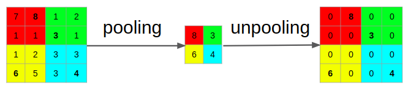
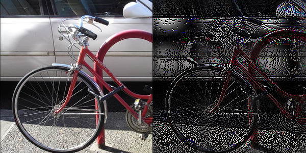
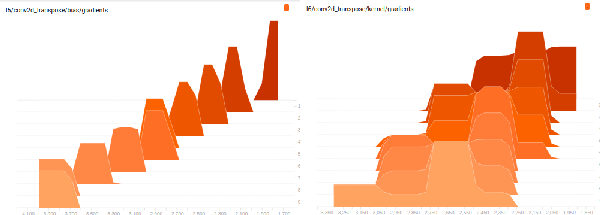

This post explains how to code an 'differentiable' unpooling layer with Tensorflow. It is tested up to Tensorflow 1.4 but should be compatible with later versions as it relies on low level API.
There are many 'definitions' or confusion about unpooling. Sometimes it is confused with strided convolution, transpose convolution (abusively called deconvolution) or interpolation. I use the definition of unpooling as stated by M.D. Zeiler in Adaptive Deconvolutional Networks for Mid and High Level Feature Learning. It was then taken as the norm for unpooling in other papers. This paper aims at generating features from trained CNN by inverting the feature maps back to image space. People interested in this subject may refer to the paper for in depth explanation but the main idea is to invert ReLU with ReLU, convolution with transpose convolution and pooling with unpooling. Roughly speaking, pooling consists in taking local maxima on a map and discarding the rest. Unpooling puts back these maxima into their map location and set the rest to 0.

This figure shows the pooling operation with a kernel of size 2 and a stride of 2. A kernel of 2 means that you look for the local maxima on a block of 2x2. A stride of 2 means that you take a block every 2 blocks.
You can find ready to run examples here.
This code is tested up to Tensorflow 1.4. Let me know if you have issues with more recent versions.
The previous paragraph explained how unpooling 'inverse' the pooling operation. The unpooling output is also the gradient of the pooling operation. This means that the automatic back propagration from Tensorflow does this operation so it means that there is some low level code that does it. After exploring the dark lands of Tensorflow low API I found that the function I looked for was gen_nn_ops._max_pool_grad. Then we need to specify the gradient of this operation for the automatic backpropagation of Tensorflow to happen. Once again, the low level API of Tensorflow already offers it but it is not registered as the gradient of gen_nn_ops._max_pool_grad so you have to do it manually.
The unpooling layer has the following prototype:
gen_nn_ops._max_pool_grad(pool_input,pool_output,unpool_input,pool_kernel_size,pool_stride,pool_type)
"""
Args:
Args:
pool_input: input of the pool operation you are inverting
pool_output: output of the pool operation you are inverting
unpool_input: feature map that you want to unpool
pool_kernel_size: same kernel size as the pool operation you are inverting
pool_stride: same stride as the pool operation you are inverting
pool_type: 'VALID' or 'SAME' (same as for the pool operation you are inverting)
"""
Disclaimer: the arguments description comes from my understanding of the code and not official documentation of Tensorflow. I may have misunderstood them.
And you register the unpooling gradient operation by adding the follozing code to your project:
@ops.RegisterGradient("MaxPoolGradWithArgmax")
def _MaxPoolGradGradWithArgmax(op, grad):
print(len(op.outputs))
print(len(op.inputs))
print(op.name)
return (array_ops.zeros(
shape=array_ops.shape(op.inputs[0]),
dtype=op.inputs[0].dtype), array_ops.zeros(
shape=array_ops.shape(op.inputs[1]), dtype=op.inputs[1].dtype),
gen_nn_ops._max_pool_grad_grad_with_argmax(
op.inputs[0],
grad,
op.inputs[2],
op.get_attr("ksize"),
op.get_attr("strides"),
padding=op.get_attr("padding")))
I provide two simple examples:
The next figure shows the input and output of the pool/unpool. The code is straighforward. 
I check the gradient histogram at each training step and observe that it is not 0 for all the layers with unpooling. The next figure shows the gradient of the weights on the 6th layer and the gradient of the bias of the 5th layer. You can check all the gradient histograms by running tensorboard on the checkpoint in this directory
